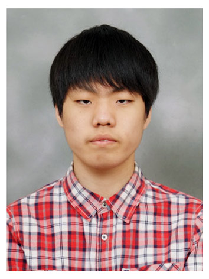

|  | 지원분야 | AI융합소프트웨어 | ||
|---|---|---|---|---|
| 성명(국문) | 정세아 | 성명(영문) | Seah Jung | |
| 생년월일 | 1994년 10월 6일 | 연락처 | 010-3408-9952 | |
| 이메일 | ops1520@naver.com | |||
| 주소 | 경기도 부천시 원미구 삼작로527번길 13 201호 | |||
| 재학기간 | 학교명 | 전공 및 수료과목 | 학위 | 구분 | 학점 |
|---|---|---|---|---|---|
| 2013.03 ~ 2019.02 | 가톨릭대학교 | 사회복지학과 | 학사 | 졸업 | 4.1 |
| 2025.03 ~ 2027.02 | 한국폴리텍대학 | AI프로그래밍, Python, 머신러닝, 데이터베이스 등 | 전문학사 | 졸업예정 | 4.3 |
| 활동기간 | 활동구분 | 기관 | 활동내용 |
|---|---|---|---|
| 2020.02 ~ 2024.08 | 사회복지사 | 행복한동행발전소 | 이용자 생활 지원 및 프로그램 운영 |
| 취득일자 | 자격증 및 면허종류 | 자격번호 | 발행기관 |
|---|---|---|---|
| 2019.03 | 사회복지사 1급 | 해당 없음 | 한국산업인력공단 |
| 2025.05 | SQLD | 해당 없음 | 한국데이터산업진흥원 |
| 2026.03 | 정보처리산업기사 | 해당 없음 | 한국산업인력공단 |
|
저는 사회복지사로서의 경험을 통해 다양한 사람들의 삶을 가까이에서 이해하고 지원하는 일을 해왔습니다.
이를 통해 실질적인 도움을 줄 수 있는 기술의 필요성을 절감하였고, 그 결과 AI융합소프트웨어과에 진학하여 새로운 도전을 시작하게 되었습니다. 현재는 Python, 머신러닝, 데이터베이스 등 다양한 IT기술을 배우며, 사람 중심의 기술 개발을 목표로 실력을 키워가고 있습니다. 기술을 활용해 사회적 가치를 실현하고자 하는 사명감을 가지고 있으며, 문제를 발견하고 해결하는 능력을 지속적으로 향상시키고 있습니다. 앞으로도 따뜻한 공감능력과 실용적인 기술력을 함께 갖춘 인재로 성장해, 사회에 긍정적인 영향을 줄 수 있는 개발자가 되고자 합니다. |